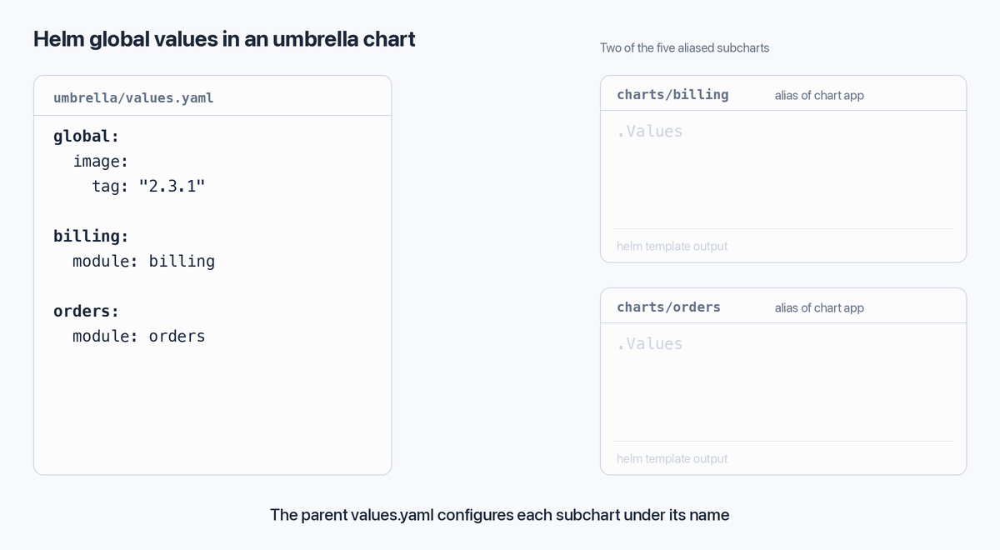

AI TL;DR Too lazy to read? Summarize this post with:
Helm Global Values: The Right Way to Share Values in an Umbrella Chart#
I wrote this blog post to share an idiomatic way to use values defined in a parent chart across its subcharts using Helm Global Values. This approach changed how I structure my charts, making them more flexible and easier to configure without losing the semantics of each subchart. The post covers a straightforward explanation and a hands-on example using an umbrella chart that defines a single image tag shared by two modules in one place. It also explains the advantages of Global Values over YAML anchors.
Global Values Reach Every Subchart#
In Helm, Global values are the values under the reserved global key, and every chart and subchart can read them. I first saw the key in the External Secrets Operator chart and in Bitnami charts such as Fluent Bit, and took it for a naming convention. It isn't one, although inside a single chart it behaves like any other key. The difference shows up when a chart has subcharts.
A parent chart, or umbrella chart, declares other charts as dependencies and configures each one in its values.yaml under a key with the subchart's name. Helm passes each subchart only its own block, without the prefix, so a subchart template reads .Values.replicaCount, not .Values.mysubchart.replicaCount. In the words of the Helm documentation on subcharts and globals, "a subchart cannot access the values of its parent."
global is the exception to that scoping. Helm reserves Values.global for values that "can be accessed from any chart or subchart by exactly the same name". A value under global in the parent therefore reaches every subchart as .Values.global.<name>. Any other key in the parent stays invisible to the subchart unless it sits in the subchart's block.
Setting global in the umbrella chart's values is not enough, because the subchart must provide support for reading values at the global level! The global is a mechanism for the chart developer, who decides which values are worth reading from the parent chart and templates them from .Values.global. To use an image tag set in the parent's global, the subchart template has to read .Values.global.image.tag. A template that reads only .Values.image.tag keeps using the subchart's own value, even when the parent defines global.image.tag. The External Secrets Operator deployment template does this with imagePullSecrets, reading .Values.imagePullSecrets first and falling back to .Values.global.imagePullSecrets. The Bitnami Fluent Bit chart passes .Values.global to its image helper, so a global.imageRegistry set in the parent replaces the image registry.
The charts reference adds three rules. Globals also reach the subcharts of subcharts. When the parent and a subchart define the same global, the parent wins. And globals must be declared explicitly, so you can't use an existing non-global key as a global.
To see the three cases side by side, take an umbrella chart that imports a subchart as billing, with these values:
# umbrella/values.yaml
replicaCount: 1
billing:
replicaCount: 2
global:
image:
tag: "2.3.1"
Each key reaches the templates of the two charts in a different way:
Key in the umbrella |
How the umbrella templates read it |
How the |
|---|---|---|
|
|
No access |
|
|
|
|
|
|
One Global Image Tag for Two Modules#
global clicked for me with an internal application at work. I wrote a chart for it and an umbrella chart that imports that chart twice, once per application module, each with its own values. The umbrella works like a bounded context for the modules. Both run the same container image, and I didn't want to repeat the tag in each module's values.

The umbrella chart imports the application chart once per module with alias, the dependency field for adding the same chart more than once. The module names are examples:
# umbrella/Chart.yaml
apiVersion: v2
name: my-app-bundle
version: 0.1.0
dependencies:
- name: app
alias: billing
version: 0.1.0
- name: app
alias: orders
version: 0.1.0
The tag lives once, under global at the root of the umbrella values. Each module block only has its own settings:
# umbrella/values.yaml
global:
image:
tag: "2.3.1"
billing:
module: billing
orders:
module: orders
The application template uses the global tag when it is set and falls back to the chart's own value:
# app/templates/deployment.yaml
image: "{{ .Values.image.repository }}:{{ .Values.global.image.tag | default .Values.image.tag }}"
The application chart also declares the global key in its values.yaml, with an empty default:
# app/values.yaml
global:
image:
tag: ""
module: ""
image:
repository: registry.example.com/my-app
tag: "1.0.0"
helm template renders both modules with the global tag:
helm template rel ./umbrella | grep image:
image: "registry.example.com/my-app:2.3.1"
image: "registry.example.com/my-app:2.3.1"
Bumping every module now takes one value, such as --set global.image.tag=2.4.0, and the application chart still works standalone with its own image.tag.
To see the
globalvalues each subchart receives, use the JSON dump fromHelm Tips: Inspect Your Chart Context with JSON. For what I template in the application chart, see
YAML Anchors Break Across Values Files#
Before global, I shared parameters across module blocks with YAML anchors, defining the tag once with &tag and referencing it with *tag. Anchors only resolve inside the file being parsed. When I split the umbrella values into more than one file, a file passed with -f couldn't reference an anchor from another one. global doesn't have that limit, because Helm merges all values files before passing the global block to the subcharts.
Key Takeaways#
globalis a reserved key that any chart or subchart reads as.Values.global.<name>.Subcharts see only their own block of the parent's values, except for
global.Setting
globalin the umbrella chart's values is not enough, because the subchart must provide support for reading values at the global level.Inside a single chart,
globalis a regular value that reaches only the templates that read it.When the parent and a subchart define the same global, the parent's value wins.
An umbrella chart that imports the same chart several times with
aliascan set a shared value, such as the image tag, once underglobal.A subchart that reads a global should declare it with an empty default, so it still renders on its own.
YAML anchors only resolve inside one file and break when values are split across files.
References#
I'm Carlos Neto, and this blog is where I share my experiences and open source contributions. More about me on my home page. If you have questions or a different approach, contact me on LinkedIn.